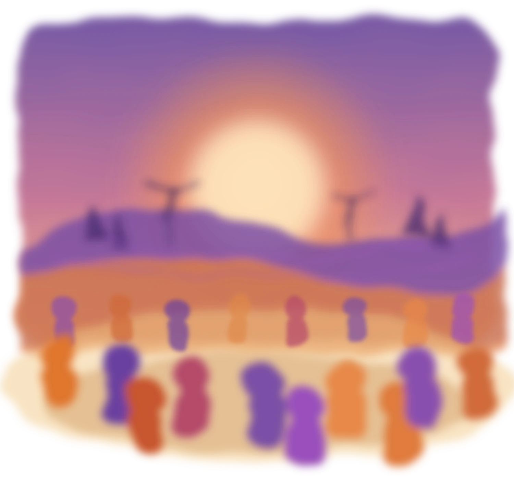

CFF is a community of practical radicals doing climate work with people that are most impacted by the climate crisis.
CFF helps teams sensemake, experiment, and mobilize projects that make climate solutions work with, and for, people. We bring together designers, researchers, and policymakers to do climate work that is run by communities, and works for communities.

We are a regenerative design think tank and community of practice that works for communities. We bring together designers, researchers, and policymakers to challenge dominant narratives, test alternatives, and build the ones that will ensure better outcomes for all by centering regenerative design and participatory governance.
We research, prototype, and action the governance methods that put communities at the centre of climate and ecological decisions, and we build them with the practitioners who use them.
We're on a mission to bring citizens, scientists, builders, artists, and policymakers together to design real, community-led solutions to climate challenges.
Why climate, land and ocean decisions keep failing the people who live with the consequences, and what the evidence actually says about fixing it.
Methods get designed, run in real climate processes, and redesigned to fit our evolving needs.
A community of practitioners — community leaders, city officials, designers, artists, scientists — uses the methods and reports back.
We share what we learn and make it accessible to all in the hopes that we can change the culture around climate decision-making.
CFF launched publicly at the ChangeNOW Summit in Paris in April 2026, with a workshop on inclusive governance methods for climate resilience run with C3Labs and Climate House.
A working collection on participatory governance, regenerative design and inclusive planning. Every entry is annotated with instructions for implementation.
57 resources · last reviewed August 2026
Start from the trap you're in, not the topic you're researching.
Add a note on something you ran, or suggest a resource we've missed. Notes are what make this a community of practice rather than a reading list. Everything is credited, and reviewed monthly.
Contribute to the libraryCommunity of practice
The methods on this site were built by practitioners running real processes, and they only stay useful if that keeps happening. The community of practice is where the magic of participatory governance happens.
Twelve to twenty people, ninety minutes, online. One live case brought by a participant, worked through with the group.
Open, no agenda, no charge. Bring a process you're stuck in and we'll think about it with you for an hour.
The living repository. Annotate an entry, add a note on something you ran, or flag a resource we've missed. Everything is credited.
Seasonal in-person sessions for the community to meet and collaborate on a project together.
That you try working on this for real — designing, funding, delivering or living with a process, not researching the field from a distance. And that when you use something from here, you tell us your findings.
Start a conversationReach us
Whether you're stuck in a process, want to suggest a resource, or think there's work here we should be doing together.
A quarterly session for practitioners working on the same question.
For media, panels and workshops, use the form and pick the speaking option.
A monthly field journal to unlearn and reimagine our economic and political systems for a regenerative future. Subscribe to our newsletter to stay up to date on our research, community events, and what's been inspiring us lately.